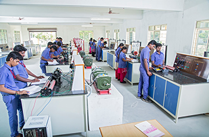

- Home
- Departments
- Electrical and Electronics Department
Electrical and Electronics Department
Electrical and Electronics Engineering is a vibrant field that plays a vital role in everyday life. It has been flourishing and enhancing human life for more than a century. It builds upon laws of attraction (Electricity and Magnetism) and operates by electromagnetic principles (Electrical machines, Transformers).
It involves power generation, Transmission and distribution etc., and it has diverse areas such as electronics (High Definition TV, Embedded systems etc.,), telecommunications (designing cell phones, mobile network), VLSI (designing chips for all the modern appliances), control systems (designing modules to control an equipment/system) and many more areas. It provides plenty of opportunity for proactive young engineers with potential to innovate new ideas which make our life better and happier.
Vision
To become a front-runner in bringing out graduates with foundation in electrical and electronics engineering who can cater to the dynamic needs of the industry and to provide a diverse and stimulating environment for quality researchers, innovators and entrepreneurs and thereby contribute value to the knowledge-based economy and society.
Mission
- M1: To deliver knowledge among students through contemporary curriculum and modern pedagogical methods in the areas of electrical engineering and interdisciplinary areas.
- M2: To enable students, develop skills in solving complex engineering problems and to provide a framework for promoting collaborative and multidisciplinary activities.
- M3: To nurture the personality traits of the students in different dimensions to emphasis the ethical values.
Degree Offered
- B.E. Electrical and Electronics Engineering
Teaching Faculty
Professors/Assistant Professors
- Mr. B. Arun Prasad M.E.(Assistant Professor)
- Ms. G. Kiruthika M.E.(Assistant Professor)
- Mr. V. Sureshkumar M.E.(Assistant Professor)
- Ms. S. Deepika M.E.(Assistant Professor)
- Mr. D. Shanmugavel M.E.(Assistant Professor)
- Mr. P. Kavinshankar M.E.(Assistant Professor)
- Mr. D. Jeevaa M.E.(Assistant Professor)
- Mr. T. Loganathan M.E.(Assistant Professor)
- Mr. A.Ram Kumar M.E.(Assistant Professor)
- Ms. K .Sudhananthi M.E.(Assistant Professor)
Non-Teaching Faculty
- Mr. S. Senthilkumar DEEE., (Lab Technician)
The mission of our Electrical and Electronics department is to foster the technical and professional competencies of our students by providing innovative and quality education in current and emerging technologies of modern Electrical and Electronics Engineering. We equip them with knowledge of global industrial scenario and challenges faced by electrical based industries. We mold our graduates to have rewarding and successful careers in a diverse range of electrical engineering fields and to become future innovators and entrepreneurs to solve engineering problems in industry.
Our Department Faculty members have diverse specializations in areas of Power Systems, Energy Engineering, Control Systems and Instrumentation, VLSI Design, Applied Electronics. Our Department is equipped with excellent laboratory facilities which enable our students to conduct experiment, analyze and interpret results and simulations, hence formulate and solve engineering problems. Our Department has full-fledged library to cater the needs of faculty members and student's reference.

Our Laboratories serve our students to test their acquired knowledge in Electrical and Electronics Engineering and transform them into practical application. Our Department has six well- equipped Laboratories:
- Electric Circuits Laboratory
- Electrical Machines Laboratory
- Power Electronics Laboratory
- Control systems and Instrumentation Laboratory
- Power Systems simulation Laboratory with simulation software designed for power electronics and motor drives including PSIM, MATLAB, TURBO C, PSPICE soft wares.
- Electrical Engineering Practices Workshop
We provide Personality development program and Technical training to prepare our students for campus interviews. This enables them to face Aptitude tests and Technical with enormous confidence. We engage them in team activities and help them acquire communication skills and leadership qualities, to create a host of highly talented energetic professionals who are the need of our nation. We motivate our students with talks by expert personalities from leading engineering firms to instill confidence and face the challenges of future. Apart from classroom sessions we kindle the creativity of students and train them with value-added courses to bridge the gap between advanced technology and curriculum. Thus a Graduate from PIE Tech can plan his/her future with confidence and have a thriving career in Electrical Engineering and other core fields of specialization in any Indian or Multinational companies. The association provides a platform for our students to exhibit and develop their skills in their co-curricular and extra-curricular abilities.
PROGRAMME EDUCATIONAL OBJECTIVES
- PEO1: Have successful technical and professional careers in their chosen fields such as circuit theory, Field theory, control theory and computational platforms.
- PEO2: Engross in life long process of learning to keep themselves abreast of new developments in the field of Electronics and their applications in power engineering.
PROGRAMME OUTCOMES
- Apply the Mathematical knowledge and the basics of Science and Engineering to solve the problems pertaining to Electronics and Instrumentation Engineering.
- Identify and formulate Electrical and Electronics Engineering problems from research literature and be ability to analyze the problem using first principles of Mathematics and Engineering Sciences.
- Come out with solutions for the complex problems and to design system components or process that fulfill the particular needs taking into account public health and safety and the social, cultural and environmental issues.
- Draw well-founded conclusions applying the knowledge acquired from research and research methods including design of experiments, analysis and interpretation of data and synthesis of information and to arrive at significant conclusion.
- Form, select and apply relevant techniques, resources and Engineering and IT tools for Engineering activities like electronic prototyping, modeling and control of systems and also being conscious of the limitations.
- Understand the role and responsibility of the Professional Electrical and Electronics Engineer and to assess societal, health, safety issues based on the reasoning received from the contextual knowledge.
- Be aware of the impact of professional Engineering solutions in societal and environmental contexts and exhibit the knowledge and the need for Sustainable Development.
- Apply the principles of Professional Ethics to adhere to the norms of the engineering practice and to discharge ethical responsibilities.
- Function actively and efficiently as an individual or a member/leader of different teams and multidisciplinary projects.
- Communicate efficiently the engineering facts with a wide range of engineering community and others, to understand and prepare reports and design documents; to make effective presentations and to frame and follow instructions.
- Demonstrate the acquisition of the body of engineering knowledge and insight and Management Principles and to apply them as member / leader in teams and multidisciplinary environments.
- Recognize the need for self and life-long learning, keeping pace with technological challenges in the broadest sense.
PROGRAM SPECIFIC OBJECTIVES (PSOs)
- Analyze, design and provide an engineering solution in the areas involving electrical machines, power generation, power electronics, transmission & distribution and energy management.
- Analyze and design controllers for electrical system using analog and digital electronic circuits and systems.
- Apply effective knowledge of the electrical engineering domain in the context of environmental & social concerns.
- Graduates will be motivated for continuous life-long learning along with leadership skills.
Technical Quiz
- EE3303 / Electrical Machines 1
- CS3353 / C Programming and Data Structure
- EE3591 / Power Electronics
- EC3301 / Electronic Devices and Circuits
- EE3301 / ELECTROMAGNETIC FIELDS
- EE3009 / SPECIAL ELECTRICAL MACHINES
- EE3503 / Control Systems
- EE3302 / Digital Logic Circuits
- CME365 / Renewable Energy Technologies
- EE3033 / Hybrid Energy Technology
- CCS334-Big Data Analytics
- OIE353 / Operation Management
- EE3701 / High Voltage Engineering
- EE3501 / Power System Analysis
- EE3037 / Power System Transients
- GE3791/Human Values and Ethics
- GE3752/Total Quality Management
Odd Semester |
Even Semester |